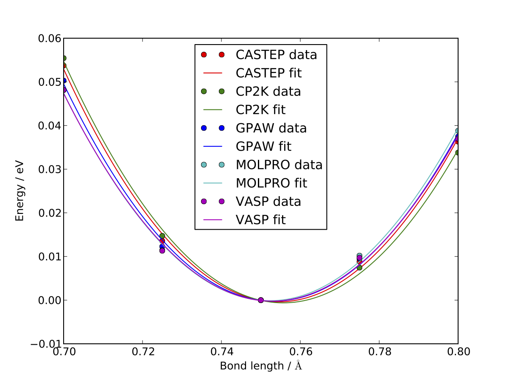

Introduction to quippy¶
| Authors: | James Kermode |
|---|---|
| Date: | 28 January 2013 |
This introduction is adapted from a talk given at a CECAM workshop Validation and Verification in Electronic-Structure calculations in September 2012.
Overview of libAtoms and QUIP¶
- The libAtoms package is a software library written in Fortran 95 for the purposes of carrying out molecular dynamics simulations.
- The
QUIP(QUantum mechanics and Interatomic Potentials) package, built on top oflibAtoms, implements a wide variety of interatomic potentials and tight binding quantum mechanics, and is also able to call external packages. - Various hybrid combinations are also supported in the style of QM/MM, including Learn on the Fly scheme [LOTF]
- quippy is a Python interface to libAtoms and QUIP.
Potentials implemented in QUIP¶
Classical interatomic potentials:
- BKS (silica)
- Brenner (carbon)
- EAM (fcc)
- Fanourgakis-Xantheas
- Finnis-Sinclair (bcc)
- Flikkema-Bromley
- GAP (general many-body)
- Guggenheim-McGlashan
- Lennard-Jones
- Morse
- Partridge-Schwenke (water monomer)
- Si-MEAM (silicon)
- Stillinger-Weber (carbon, silicon, germanium)
- Stillinger-Weber + Vashishta (silicon/silica interfaces)
- Sutton-Chen
- Tangney-Scandolo (silica, titania etc)
- Tersoff (silicon, carbon)
Plus several tight binding parameterisations (Bowler, DFTB, GSP, NRL-TB, …)
External packages:
CASTEP— DFT, planewaves, ultrasoft pseudopotentialsCP2K— DFT, mixed Gaussian/planewave basis set, various pseudopotentials. OurCP2KDriver supports QM, MM and QM/MM.MOLPRO— All electron quantum chemistry code. DFT, CCSD(T), MP2VASP— DFT, planewaves, PAW or ultrasoft pseudopotentials- Interface to OpenKIM project
- Relatively easy to add new codes
QUIP also has a full interface to the Atomic Simulation
Environment, ASE
ASEadds support for several more codes e.g.ABINIT,Elk,Exciting,GPAW,SIESTA, …ASEalso works with the CMR database system
Scripting interfaces¶
Benefits of scripting interfaces¶
A scripting interface provides access to all the functionality of a code written in a low level language (e.g. Fortran, C) via a high level language (e.g. Java, Python, Perl, TCL, …).
- Can be generated either automatically or manually from the source code of the low level code
Primary benefits of scripting interfaces are:
- Preparation of input files
- Analysis and post processing of results
Scripting intefaces also bring increased flexibility:
- Can be used interactively, or via shell commands/scripts
- Interactive visualisation and structure modification
- Interoperability with other codes: Make use of routines from other scientific packages
- Batch processing: parameter sweeps, high throughput
- Assemble existing components in new ways: easily put internal subroutines to work
- Good for less experienced programmers: high level languages generally more fault tolerant
Finally, scripting interfaces can bring improvements to the code being wrapped:
- Simplify top level programs
- Replace Fortran or C main programs with scripts (computational steering)
- Reduce need for special purpose keywords and options
- Encourages good software development practices - e.g. modularity, well defined APIs
- Speed up development of new algorithms and routines
- Prototype in high level language
- Later reimplement time critical parts in low level language
- Eases creation and maintenance of unit/regression tests
Why Python?¶
Python has become increasingly popular for scientific computing in recent years, due to
- Clean, easy-to-learn syntax
- Very high level object-oriented language
- Availability of packages: many fast, robust mathematical and scientific tools, principally numpy and scipy but now also many more.
But aren’t interpreted languages like Python really slow?
- Providing numerically intensive parts are vectorised, Python code can run surprisingly fast
- Mixture of high and low level languages can be ideal to maximise overall efficiency of developing and running codes
Wrapping Fortran codes in Python¶
Automatic wrapper generation with f2py¶
- [f2py], part of numpy, allows Fortran routines to be called from Python
f2pyscans Fortran 77/90/95 codes and automatically generates Python interfaces- Portable, compiler independent
- Produces easy-to-use Python extension modules
- Supports all basic Fortran types, multi-dimensional arrays
- But no support for derived types or overloaded interfaces
Also allows Fortran routines to call back to Python functions
Derived type support via f90wrap¶
[f90wrap] adds support for Fortran 90 derived types and generic
interfaces to f2py
- Based on Fortran 90 documentation generator
f90doc[Rutt2004] - Opaque interface layer wraps derived types
using
transfer()[Pletzer2008]. - Thin object-oriented layer on top gives wrapped code natural (Pythonic) look and feel
- Currently
f90wrapis part ofquippy, but to be released in future as a standalone utility, or merged into f2py
Overview of quippy capabilities¶
quippyis a general purpose tool for:- Manipulating atomic configurations
- Visualising and analysing results
- Performing classical and ab initio calculations
- Other similar tools exist, with different focuses, e.g.:
- ASE – atomic simulation environment
- MMTK – molecular modelling toolkit
- OpenBabel – toolbox for chemical file format conversion
- pizza.py – LAMMPS toolkit
- PyMOL – visualisation suite, optimized for biomolecules
- pymatgen – Materials Project collaboration
- MDAnalysis - provides analysis for AMBER, CHARMM, Gromacs
Creating structures¶
Python interactive session:
>>> from qlab import *
>>> dia = diamond(5.44, 14)
>>> print dia.n
8
>>> print dia.pos.T
[[ 0. 0. 0. ]
[ 1.36 1.36 1.36]
[ 2.72 2.72 0. ]
[ 4.08 4.08 1.36]
[ 2.72 0. 2.72]
[ 4.08 1.36 4.08]
[ 0. 2.72 2.72]
[ 1.36 4.08 4.08]]
Interactive visualisation with AtomEye¶
quippy includes a atomeye to the [AtomEye] atomic
visualisation programme. To print values, and visualise structure:
>>> dia.pos[1]
[ 0. 0. 0.]
>>> view(dia)
{kind=link}
Modify data:
>>> O_pos = (dia.pos[1]+dia.pos[7])/2.
>>> dia.add_atom(pos=O_pos, z=8)
>>> redraw()

Manipulating atoms¶
Setup \(\alpha\)-quartz cell:
>>> unit = alpha_quartz(a=4.92,
... c=5.40)
>>> aq = supercell(unit, 3, 3, 3)
>>> view(aq)

Custom atom colouring:
>>> aq.add_property("charge", 0.0)
>>> aq.charge[aq.z==8] = -1.4
>>> aq.charge[aq.z==14] = 2.8
>>> aux_property_coloring("charge")

Filtering atoms:
>>> aq.map_into_cell()
>>> aq2 = aq.select(aq.pos[2,:] > 0)
>>> view(aq2)

Configurations can be written out in number of formats, e.g.:
>>> aq2.write('aq.xyz') # XYZ
>>> aq2.write('aq.cell') # CASTEP
>>> aq2.write('aq.cube') # Gaussian
>>> aq2.write('INCAR') # VASP
Post-processing of results¶
Reading configurations¶
Individual snapshots or entire trajectories can be read in, also in a variety of formats:
>>> first = Atoms('md.xyz')
>>> final = Atoms('md.xyz@-1')
>>> traj = AtomsList('md.xyz')
>>> view(traj)
>>> draw_arrows('force')

Plotting with the matplotlib library:
>>> from pylab import *
>>> plot(traj.time, traj.energy,
>>> label='Potential energy')
>>> xlabel('Time / fs')
>>> ylabel('Energy / eV')
>>> legend(loc='lower right')
{kind=link}
Post processing calculations¶
Calculate kinetic energy, and add total energy to the plot:
>>> ke = array([0.5*sum(at.mass*
... at.velo.norm2())
... for at in traj])
>>> plot(traj.time,
... ke + traj.energy,
... label='Total energy')

Maxwell-Boltzmann distribution of atomic velocities
>>> def max_bolt(m,T,v):
... "Maxwell-Boltmann distribution of speeds at temperature T for particles of mass m"
... return 4*pi*(m/(2*pi*BOLTZMANN_K*T))**(3.0/2.0)*(v**2)*exp(-m*v**2/(2*BOLTZMANN_K*T))
>>> speeds = [at.velo.norm() for at in traj[-50:]]
>>> all_speeds = hstack(speeds)
>>> hist(all_speeds, normed=True, bins=20, alpha=0.5)
>>> v = linspace(0.0, 0.02, 100)
>>> plot(v, max_bolt(traj[0].mass[1], 500.0, v))

Performing calculations¶
- As well as preparing structures and post-processing results,
quippyallows calculations to be run - In
QUIPandquippy, all calculations are performed with a Potential object (very similar to theCalculatorconcept inASE) - Types of potential
- Internal: interatomic potential or tight binding
- External: file-based communication with external code or callback-based communication with a Python function
- Plus flexible combinations of other potentials
- Internal potentials use XML parameter strings
- External potentials use template parameter files
Creating a Potential¶
Internal potential:
>>> sw_pot = Potential('IP SW')
External potential:
>>> castep = Potential('FilePot',
... command='./castep-driver.sh')
Driver script can be a shell script, an executable program using
QUIP or a quippy script. It can even invoke code on a remote
machine.
Higher level functionality¶
- Any of these codes or potentials can be used for higher level calculations
- Within QUIP
- Molecular dynamics and QM/MM (any combination of codes)
- Geometry optimisation with CG, damped MD and FIRE
- Transition state searches with NEB and string method
- By interoperating with other packages
Interoperability between electronic structure codes¶
For verification and validation, we would often like to compare structural properties predicted by a number of DFT codes
- Let’s try this with the H2 molecule for a few codes
- PBE XC-functional
- Basis set parameters have been converged for each code
Definition of H2 molecule:
def h2_molecule(a, vacuum=10.0):
h2 = Atoms(n=2, lattice=np.diag([vacuum, vacuum, vacuum]))
h2.set_atoms([1,1])
h2.params['bond_length'] = a
h2.pos[1,1] = -a/2.0
h2.pos[1,2] = +a/2.0
return h2
CASTEP calculation:
>>> h2 = h2_molecule(0.7)
>>> castep.calc(h2, energy=True, force=True)
>>> print h2.energy
>>> print h2.force
Alternative invocation methods¶
ASE-compatible calculator interface:
>>> h2.set_calculator(castep)
>>> e = h2.get_potential_energy()
>>> f = h2.get_forces()
Most of these tools can also be used without the quippy Python
interface, using the QUIP eval tool:
eval init_args="FilePot command=./castep-driver.sh" at_file=h2.xyz F E
There is also a command line tool convert.py which can convert
between file formats, e.g. .xyz to/from CASTEP .cell, VASP
INCAR, etc. (plus more Supported File Formats).
Changing parameters¶
The template input files and other options can be changed by passing
extra arguments to the calc() routine, e.g. to do
a geometry optimisation instead of a single point calculation:
>>> castep.calc(h2, energy=True,
... template='h2',
... task='geometryoptimisation')
- Parameters can be set interactively while testing, but runs can then of course be automated with scripts
- As well as energies, forces and stress tensors, our output parsers can extract other information such as bond populations
Harmonic fit to data¶
numpy provides routines that make it easy to fit a parabola to
these data
def fit_and_plot(molecules, code, color):
energy = getattr(molecules, code+'_energy')
energy = np.array(energy) - min(energy)
plot(molecules.bond_length, energy, color+'o', label=code.upper()+' data')
p = np.polyfit(molecules.bond_length, energy, 2)
bond_length = -p[1]/(2*p[0])
spring_constant = 2.0*p[0]
a = np.linspace(min(molecules.bond_length), max(molecules.bond_length), 100)
plot(a, np.polyval(p, a), color+'-', label=code.upper()+' fit')
print '|%-10s|%10.3f|%10.1f|' % (code.upper(), bond_length, spring_constant)
Complete script for download: hydrogen-bond-length.py.

Code Bond length/A Force constant / eV/A CASTEP 0.754 36.0 CP2K 0.756 35.7 GPAW 0.753 35.1 MOLPRO 0.752 34.8 VASP 0.753 34.1
{kind=link}
Going beyond GGA¶
The framework is rather general, so we can easily connect to codes which go beyond GGA
e.g. MP2 and CCSD(T) with the
molproquantum chemistry codeCode Bond length/A Force constant / eV/A MOLPRO, MP2 0.739 35.2 MOLPRO, CCSD(T) 0.745 34.6

Robustness¶
- These tools were initially developed for multiscale QM/MM simulations, where typical production runs require ~104 DFT calculations
- Also used for fitting interatomic potentials to large QM databases (up to ~ 105 atomic environments)
- Robustness is important!
CASTEP,VASPandCP2Kinterfaces now particularly robust - Convergence checks - Fall back on more reliable density mixers - Automatic wavefunction reuse when possible -CP2KandVASPinterfaces allow persistent connections (fast!)
Summary and Conclusions¶
Advantages of quippy:
- General purpose — arbitrary, extensible data model
- All speed critical code is in Fortran, so it’s fast and scales well to large systems (~106 atoms)
- Interactive visualisation with
AtomEyeplugin (which also scales well to large systems) - Robust interfaces to several DFT codes
- Fully interoperable with ASE for many more
Disadvantages, compared to e.g. ASE:
- Fortran wrapping makes it more complex to use
- Harder to compile/install than a pure Python package
Summary:
- Adding a scripting interfaces to codes gives lots of benefits relevant to validation and verification
- Python and
f2pydo a good job of wrapping Fortran codes - Wrapping Fortran 90 codes which make heavy use of derived types is
also possible with
f90wrap libAtoms,QUIPandquippyprovide a uniform interface to a number of electronic structure codes- Freely available from [http://www.libatoms.org] (GPLv2)
References¶
| [LOTF] | Csányi, G., Albaret, T., Payne, M., & De Vita, A. ‘Learn on the Fly’: A Hybrid Classical and Quantum-Mechanical Molecular Dynamics Simulation. Physical Review Letters, 93(17), 175503. (2004) http://prl.aps.org/abstract/PRL/v93/i17/e175503> |
| [f2py] | Peterson, P.F2PY: a tool for connecting Fortran and Python programs. International Journal of Computational Science and Engineering, 4(4), 296. (2009) http://dx.doi.org/10.1504/IJCSE.2009.029165 |
| [Rutt2004] | Ian Rutt, f90doc: automatic documentation generator for Fortran 90 (2004) |
| [Pletzer2008] | Pletzer, A et al., Exposing Fortran Derived Types to C and Other Languages, Computing in Science and Engineering, 10, 86 (2008). http://link.aip.org/link/?CSENFA/10/86/1 |
| [f90wrap] | James Kermode, Fortran 90 wrapper generation tool (2008-2013), http://jrkermode.co.uk/f90wrap |
| [AtomEye] | Li, J. AtomEye: an efficient atomistic configuration viewer. Modell. Simul. Mater. Sci. Eng. (2003). Modified version: http://jrkermode.co.uk/AtomEye |